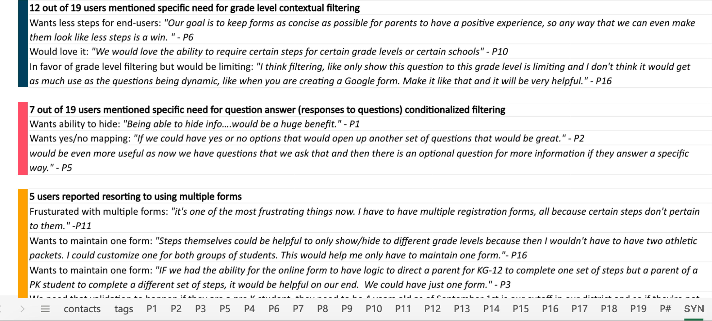
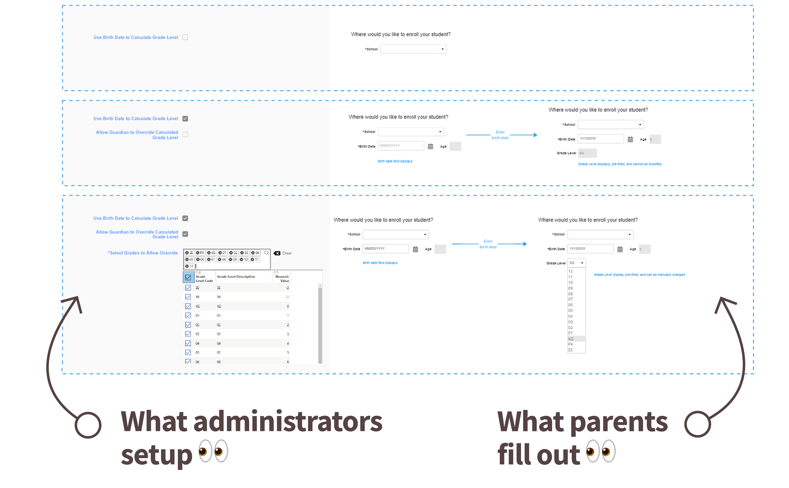
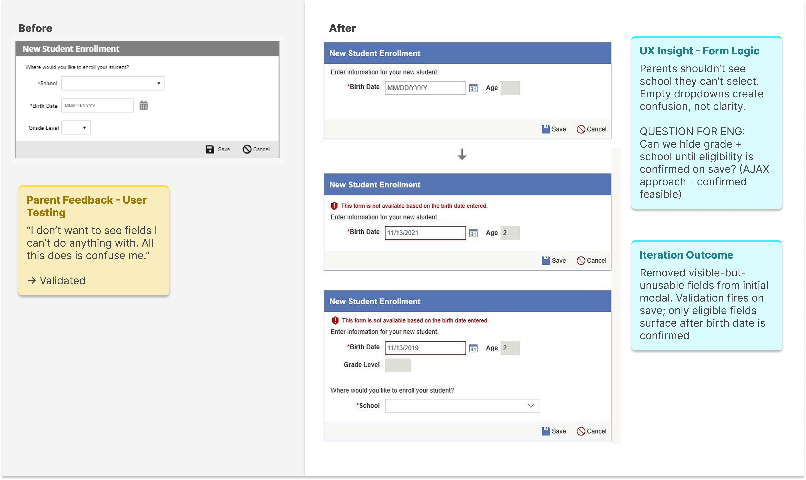
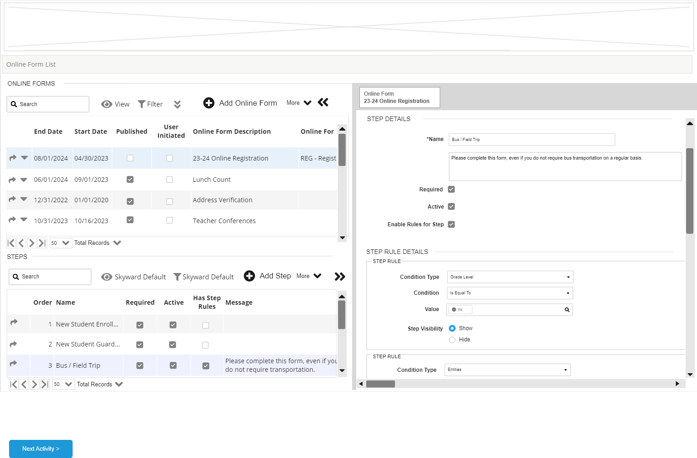

UX Case Study · Enterprise K–12 Platform
Texas School District / Forms Project
Designing Under Pressure: Transforming Complexity Into Clarity
40,000+
Students — one of the largest K–12 districts in Texas
Condition-of-Sale
Deal contingent on solving the forms problem
10–15 → 4–6
Form steps reduced through dynamic contextual scoping
End-to-End
Full design leadership — research through delivery
01 — Overview
When UX Became the Difference Between Winning and Losing
A condition-of-sale design challenge at enterprise scale
The Business Context
A large Texas school district serving more than 40,000 students was evaluating the platform. One requirement had quickly become a critical condition of sale: the district needed a scalable way to manage highly complex online forms across schools, age groups, and family workflows.
The existing experience created significant operational friction. Forms were static, repetitive, and surfaced irrelevant questions to users. Administrators struggled with complexity. Families encountered unnecessary cognitive load. If the problem could not be solved effectively, the deal itself was at risk.
The Double Challenge
What made this project especially meaningful was that the challenge extended beyond interface design. The team itself had relatively low UX maturity, limited exposure to research-driven workflows, and little experience integrating UX into product strategy early in the process.
This project became two things simultaneously: a complex product design initiative, and a UX maturity transformation effort — delivered under real business pressure.
02 — Empathize
Beginning With Listening Instead of Solutions
90 days of immersive discovery before a single wireframe
The Listening Tour
Rather than jumping directly into wireframes or requirements, I started with a structured listening tour. Over approximately 90 days, I immersed myself in the full ecosystem surrounding the product — not only what users were struggling with, but why the organization had arrived at this point operationally.
-
Stakeholder Interviews
Understand district priorities, pain points, and operational constraints
-
Sales Conversations
Map the condition-of-sale requirements and business risk clearly
-
Customer Support Observations
Identify where form complexity generated the most tickets and friction
-
User Workflow Discussions
Follow actual enrollment journeys from family submission to admin processing
-
Internal Product Alignment
Calibrate UX direction against engineering feasibility and roadmap reality
Key Discovery Themes
-
Irrelevant form steps — Users forced through questions that didn't apply to their situation
-
Workflow variation — District processes varied significantly across schools and student types
-
Manual administration — Admin tasks were heavily manual with no scalable automation in place
-
Unnecessary repetition — Families re-entered data that the system already held
-
Accumulated complexity — Years of layered requirements had compounded into an unmanageable experience
Complexity was not caused by a single feature failure. It had accumulated gradually through years of layered requirements and reactive product decisions.
Stakeholder Ecosystem
| Priority | Stakeholder | Primary Need |
|---|---|---|
| High | District Administrators | Efficient enrollment workflows — reduced manual burden |
| High | Families | Simplified, relevant form completion — less cognitive effort |
| High | Sales Teams | Condition-of-sale success — deal closure depends on this feature |
| High | Product Managers | Feasible implementation scope — technically achievable solution |
| High | Engineering | Clear conditional logic requirements — unambiguous design specs |
| Medium | Customer Support | Reduced confusion and inbound support tickets |

User Persona
Lisa
District Enrollment Administrator · K–12 District · 40,000+ Students
Goals
- Reduce manual processing and support burden
- Manage enrollment across schools efficiently
- Have forms adapt to district-specific rules
Frustrations
- Static forms surface irrelevant questions
- Duplicate workflows waste team time
- No way to bulk-manage student transfers
Behaviors
- Escalates admin friction to product teams
- Builds manual workarounds to fill gaps
- Tracks support tickets caused by form errors
"The more confusing the forms are, the more support requests we receive."
Atomic UX Research Framework
As discovery findings accumulated, I used the Atomic UX Research framework to organize observations into actionable product direction — helping stakeholders move beyond isolated user comments toward structured decision-making grounded in patterns and operational impact.
| Experiment | Fact | Insight | Recommendation |
|---|---|---|---|
| Stakeholder interviews across districts | Districts manage forms differently by age group and school | Static forms cannot scale across varied district operations | Introduce dynamic scoping logic driven by student data |
| User testing on live form flows | Families skipped irrelevant sections or abandoned flows | Cognitive overload reducing completion confidence | Reduce visible steps contextually based on user profile |
| Support ticket analysis | Duplicate forms significantly increased administrative effort | Existing workflows create compounding operational inefficiency | Build bulk move functionality for family transfer scenarios |
03 — Define
Identifying the Real Problem Beneath the Interface
From surface friction to structural complexity
The Real Problem
The issue was not simply that forms were difficult to use. The deeper issue was that the system treated every user as if they needed the same experience — regardless of age, school, student type, enrollment scenario, or district rules.
Users were forced through irrelevant workflows because the system lacked contextual intelligence. The opportunity was designing a dynamic experience that adapts to each user's specific conditions.
At the same time, an organizational challenge ran alongside the product problem. Because UX maturity was still developing, I intentionally structured collaboration sessions to introduce whiteboarding practices, journey mapping, collaborative ideation, research synthesis, and prototype validation.
Current vs Future State
Current State
- Static forms — same path for every user
- Irrelevant questions surfaced to all users
- Manual administration workflows
- High cognitive load — too many steps
- Reactive support burden from confused users
Future State
- Dynamic contextual flows — personalized per student
- Only relevant questions shown based on context
- Streamlined processes with bulk management tools
- Simplified experience — 4–6 contextual steps
- Reduced confusion — fewer inbound support tickets
04 — Ideate
Simplifying Complexity Through Contextual Logic
Making complexity invisible to users
Systems Thinking Approach
This phase focused heavily on systems thinking. Rather than designing isolated screens, I explored how the platform could use existing student and district data to dynamically shape form experiences in real time.
I facilitated collaborative whiteboarding sessions with stakeholders, product, and engineering to map potential logic flows and identify operational edge cases. Contextual variables included student grade level, enrollment type, school-specific requirements, family structure, and existing system records.
The goal was not simply reducing steps visually. The goal was making complexity invisible to users — balancing district flexibility, family simplicity, and platform scalability.
Conditional Logic Diagram
Elementary
Elementary Workflow
High School
Secondary Workflow
Reduced Completion Time + Lower Cognitive Load

Whiteboarding & Collaboration Methods
-
Journey Mapping
Understand enrollment friction across family and admin touchpoints
-
Whiteboarding Sessions
Explore conditional logic structures and edge case scenarios
-
Stakeholder Workshops
Align district operational needs with platform capability
-
Prototype Walkthroughs
Validate understanding before committing to build direction
-
Research Synthesis
Prioritize user pain points by frequency and operational severity
05 — Prototype
Making Complexity Feel Effortless
Interactive prototypes as alignment and communication tools
What the Prototypes Demonstrated
Once the logic structure was defined, I translated flows into interactive prototypes. Because stakeholders had varying levels of UX familiarity, interactive prototypes became critical communication tools — allowing teams to experience the solution rather than interpret static documentation.
- Dynamic Form Branching — Forms adapt in real time based on evaluated student and district data
- Reduced Step Counts — Irrelevant sections suppressed — families see only what applies to them
- Simplified Navigation — Clear progression cues reduce disorientation and abandonment
- Context-Aware Progression — Each step informed by the previous — no redundant re-entry
- Administrative Workflows — Bulk move functionality built into the prototype for validation


Prototype Impact Comparison
Before
- 10–15 potential form steps
- Static, one-size-fits-all flow
- Repetitive form fields
- High user confusion
After
- 4–6 contextual steps
- Adaptive workflow per user profile
- Personalized, pre-populated experience
- Clear, predictable progression
Leadership Recognition
"By embedding UX into the workflow rather than operating separately from it, the team became more engaged in user research, iterative design thinking, cross-functional collaboration, and validation before implementation. The result was not only a successful product outcome, but a stronger organizational understanding of how UX contributes strategically to product development."— Reflected in UX leadership feedback on cross-functional impact and organizational UX maturity contribution
UX Maturity Shift
Before
- Reactive requests
- Limited UX involvement
- Solutions before research
After
- Research-driven collaboration
- Embedded UX process
- Validation before implementation
06 — Test
Iterating Through Validation and Feedback
Pausing, refining, and retesting over forcing solutions forward
What Testing Revealed
Usability testing revealed important gaps that had not surfaced during earlier stakeholder discussions. Certain workflows still created confusion. Some assumptions about district processes needed refinement. Additional edge cases emerged around family structures and enrollment variations.
Rather than forcing the original solution forward, we paused, iterated, and retested. That willingness to continuously refine the experience became critical to the project's success.
Testing Methods Used
-
Stakeholder Walkthroughs
Validate logic flows against real district operational needs
-
Usability Testing Sessions
Observe families navigating prototype tasks independently
-
Prototype Validation
Confirm conditional logic behaved correctly across scenarios
-
Workflow Reviews
Check administrative bulk-move flows with admin participants
Usability Findings Snapshot
-
Users skipped form sections accidentally
Impact High confusion — completion confidence droppedAction Added contextual progress indicators and step labeling -
District workflows varied more widely than anticipated
Impact Scalability concerns — original logic too rigidAction Expanded conditional logic to support additional enrollment variables -
Families misunderstood key terminology
Impact Increased inbound support burden from confused usersAction Simplified content language; replaced jargon with plain-language labels
07 — Outcomes & Key Learnings
Designing Systems That Reduce Complexity at Scale
Condition-of-sale delivered — and more
Summary of Impact
The project successfully delivered the condition-of-sale requirement while also improving internal collaboration and UX maturity across teams. Most importantly, the project demonstrated that UX leadership is not only about producing strong deliverables — it is about creating clarity within complexity.
- Dynamic online forms scoping implemented — Condition-of-sale requirement met — deal successfully progressed
- Reduced cognitive load for families — 10–15 steps collapsed to 4–6 context-aware steps
- Streamlined admin workflows — Bulk move functionality reduced manual processing overhead
- UX embedded into team processes — Research-driven collaboration became the operational norm
- Accessibility integrated throughout — Not a separate track — woven into every prototype decision
- Cross-functional collaboration improved — Design, engineering, product, and sales aligned around user outcomes
Continuous UX Loop
Research
Whiteboarding
Prototype
Testing
Iteration
Delivery
Key Learnings
-
Listen before you design — The 90-day discovery investment prevented months of redesign. Understanding the system that generates problems is always faster than fixing the problems themselves.
-
Conditional logic is a UX tool, not just an engineering one — Designing the decision rules that shape what users see is as important as designing the screens themselves.
-
Elevating team capability is part of the deliverable — Embedding UX process into a team that hadn't yet operationalized it created lasting organizational improvement that outlasted the project.
-
Business pressure and UX rigor are not opposites — The condition-of-sale urgency made research more important, not less. Understanding the problem precisely was what made the solution fast.
-
Strong UX leadership is measured by the systems it leaves behind — Not just the interfaces delivered, but the collaboration patterns, shared language, and organizational behaviors that persist because UX became part of how the team works.
Strong UX leadership is not measured only by the interfaces delivered. It is measured by the systems, collaboration patterns, and organizational behaviors that improve because UX became part of how the team works.